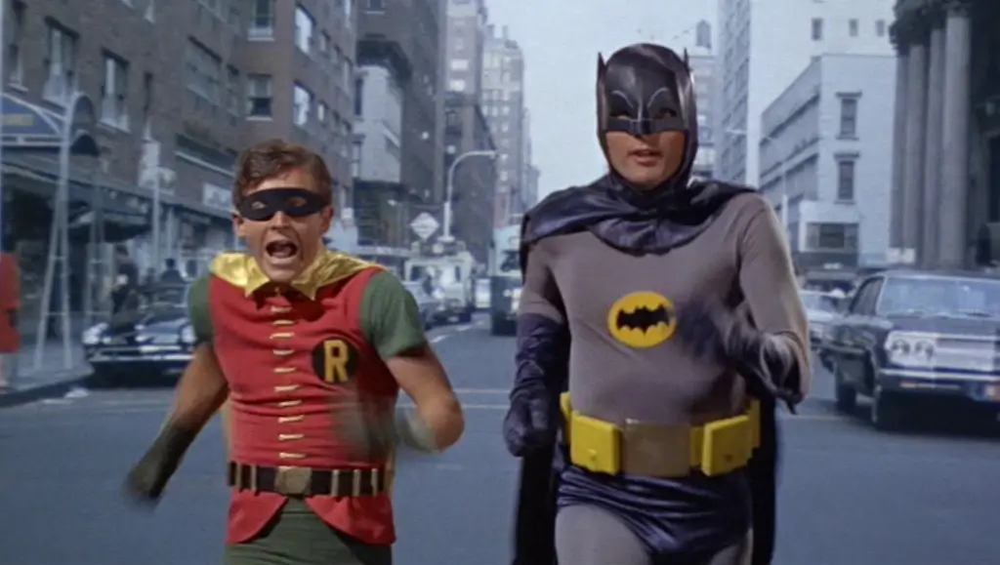
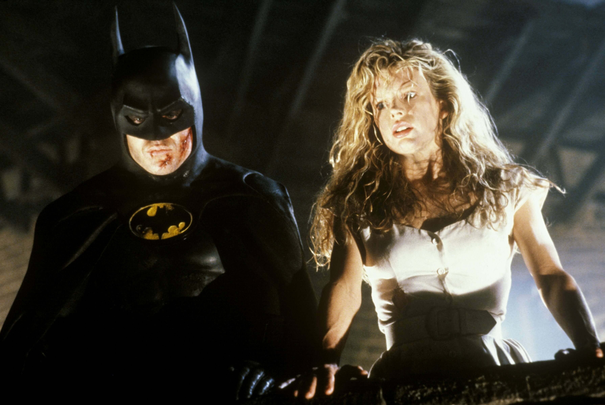
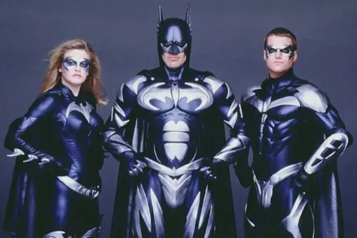
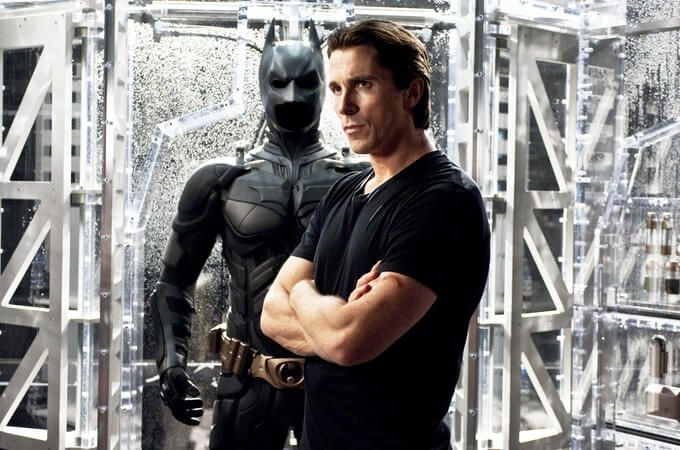
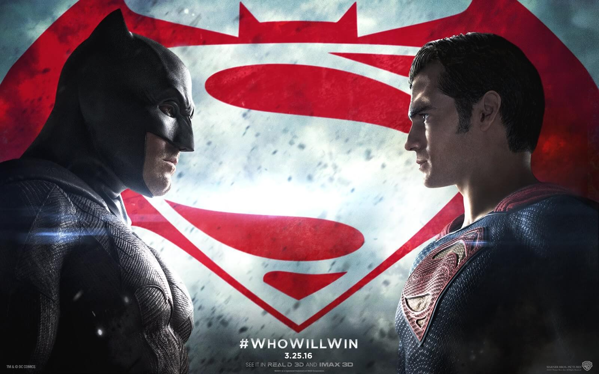
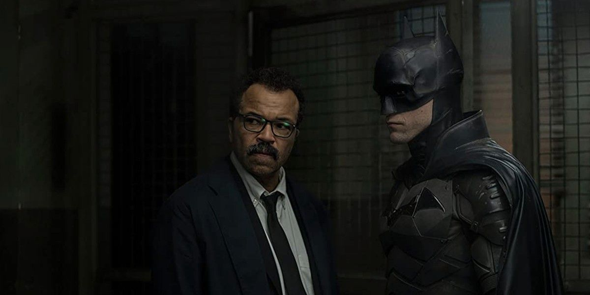

На волне успеха одноимённого сериала в 1966 году вышел полнометражный фильм. Сюжет рассказывает про Бэтмена и Робина, которые противостоят злодеями в лице Джокера, Пингвина, Загадочника и Женщины-кошки. Цель преступников — раз и навсегда покончить с двумя неутомимыми героями.
 Смотреть трейлерСюжет рассказывает о том, как юный Брюс Уэйн стал свидетелем убийства своих родителей, а когда вырос начал давать отпор преступности в Готэме. Главную роль исполнил Майкл Китон, также персонажей сыграли Ким Бейсингер, Роберт Вул и Джек Пэланс. Роль Джокера досталась харизматичному Джеку Николсону.
 Смотреть трейлерПожалуй, худший фильм про Бэтмена в истории. «Бэтмен и Робин» получил 11 номинаций «Золотая малина» (премия 1998-го), в том числе «Худший фильм года». А ещё фильм является худшим в истории человечества по версии интернет-голосования читателей журнала Empire.
 Смотреть трейлерС выходом этого фильма франшиза «Бэтмен» обрела в кино вторую жизнь. Картина Кристофера Нолана была крайне тепло встречена как критиками, так и простыми зрителями. Мрачная атмосфера, глубокий сюжет и феноменальная игра актёров заставили по новому смотреть на жанр супергеройского кино.
 Смотреть трейлерФильм, снятый режиссёром Заком Снайдером. Картина основывается на комиксах «Бэтмен. Возвращение Тёмного Рыцаря» и «Смерть Супермена». Это второй фильм Расширенной вселенной DC после «Человека из стали». Роль Бэтмена исполнил Бен Аффлек, Супермена — Генри Кавилл, Лоис Лейн — Эми Адамс, Лекса Лютора — Джесси Айзенберг, а Чудо-женщину сыграла Галь Гадот.
 Смотреть трейлерПерезапуск серии фильмов о Бэтмене. Режиссёр — Мэтт Ривз. Главного героя играет Роберт Паттинсон. Судя по трейлерам и отзывам, картина получилась мрачным детективом.
 Смотреть трейлер